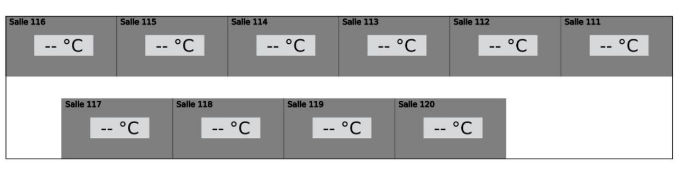

📚 Tutoriel Floorplan Home Assistant
Résultat Attendu

Structure du plan (Les couches inférieur doivent être créer en première)
-
Structure du floorplan
Pour afficher efficacement la température dans un bâtiment, nous allons créer une carte interactive dont la couleur change en fonction des capteurs. Ce tutoriel est un résumé simple.
▶ Voir la vidéo sur floorplanPour obtenir un plan final, il faut d’abord générer un SVG (conseillé avec Inkscape) avec une structure bien particulière.
-
Création de la map
- 1. Placer les murs → séparer les pièces
- 2. Placer les pièces → identifier les zones (background_numeroDeSalle)
- 3. Placer les zones de texte → identifier les zones (temp_value_numeroDeSalle)

Structure du plan (Les couches inférieur doivent être créer en première)
Il faut associer à chaque élément un ID bien particulier pour qu'il soit reconnu par Home Assistant. Si le numéro de la salle est 007 :
-
Zone de texte (température) :
temp_value_007 -
Rectangle de la salle (couleur) :
background_007
⚠️ Attention : bien définir les ID et pas seulement les tags.
Exemple d’identification
Ajouter une map dans Home Assistant
- 1. Préparer ton fichier SVG (avec IDs)
- 2. Uploader dans :
/config/www/floorplan/NomDuBatiment - 3. Vérifier que le fichier plan.yaml est dans le dossier
/config/www/floorplan/NomDuBatiment
Résultat final dans Home Assistant
Une fois les capteurs connectés, les salles se coloreront automatiquement et les températures apparaîtront.

Plan complet